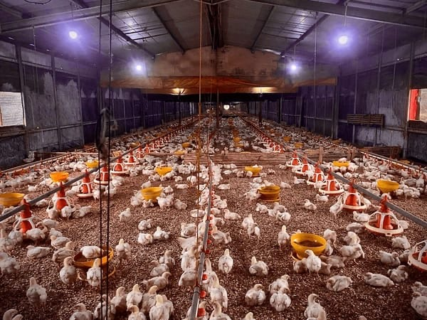

Potensi Unggulan Desa
Kekuatan ekonomi desa yang menjadi kebanggaan warga

Gula Aren Khas Cikareo Utara
Produk unggulan desa berbahan alami, bernilai ekonomi tinggi, cocok untuk UMKM lokal dan pemasaran luas.
Lihat Produk
Peternakan Ayam Produktif
Sumber penghasilan warga, membuka lapangan kerja, mendukung ketahanan pangan daerah.
Lihat Peternakan